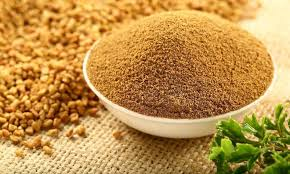

“Don't Use Herbal Concoctions For Diabetes Until You Try This...”
"Discover The 2,700 Years Old Indian Diabetes Formula That Reverses Diabetes Drastically In 90 Days Even If Other Remedies Failed!"
Dr. Akin (PHD)
“Experiencing Any of These Diabetes Symptoms?”
Always Feeling constant fatigue, mood swings, and Tiredness?
Always worrying about your crazy high blood sugar becoming uncontrollable diabetes?
Always frustrated with trying treatments that show little to no success?
Always Feeling uneasy, heartburn, and stomach aches from using herbal concoctions?
“Then Don't Use Any Herbal Concoctions Till You...
Try This New Indian Diabetes Silencing Formula Many Nigerians Are Secretly Using to Reverse Diabetes & High Blood Sugar”
Here Are Some of the Unbelievable Testimonies From People Who Have Used This Natural Therapy to Kick Out Diabetes From Their Body...
"My Blood Sugar Levels Are Now Completely Normal!"
"My Diabetes Symptoms Have Vanished!"
"From 18.2 mmol to 5.0 mmol in Just 30 Days!"
What's This Amazing New Miracle Diabetes Solution Liberating Thousands
of Nigerians And what's So Special About It?
My name is Dr. Akin (Ph.D.), a wellness researcher who has suffered torment and frustration from Type 2 diabetes.
Despite being happily married with two amazing kids, diabetes made my life a living hell.
I couldn’t enjoy common meals like EBA and rice.
Walking a few meters left me a struggle and…
My intimate life was seriously affected because my energy levels plummeted so badly.
All Thanks to diabetes and Crazy High Blood Sugar.
“REVEALED...The Unbelievable Longevity Secret of the Bishnoi Tribe!”
While researching natural solutions, I discovered the fascinating story of the Bishnoi tribe in India.
This tribe, living in the Thar Desert of Rajasthan, is renowned for their exceptional health and longevity.
They are strict about following ancient health principles....
This makes them live long, healthy lives free from many modern ailments, including diabetes.
So What’s Their Biggest Longevity Secret?

Do you know Bishnoi tribe has a unique practice of using ONLY Extracted Active ingredients from plants and roots to cure critical ailments like diabetes.
This is a major key to their remarkable health and after 9 years of Studying The Bishnoi & Indian Health Secret.
We discovered over 8 Natural Indian roots that contain active ingredients that can silence, and eliminate High Blood Sugar, Diabetes by Stabilizing insulin secretion in the pancreatic gland in less than 90 days.
"This Discovery is So Potent Even FDA & NAFDAC Approved It!"
After regulatory approval from agencies like NAFDAC & FDA, we processed & compressed it into one powerful tablet So that your Diabetes and High Blood Sugar problems can be in the past.
INTRODUCING...
BCG Indian Diabetes Silencer!

What’s The BCG Indian Diabetes Silencer?
The Indian Diabetes Silencer is a groundbreaking pharmaceutical-grade nutritional solution made by studying and extracting the active ingredients from plants used by the Bishnoi tribe.
What's Some of The Active Ingredient's That Makes
BCG Diabetes Silencer A Potent & Solution?
BCG Diabetes Silencer is created & Synthesized with RARE Natural Roots and Leaves Tested and Trusted by Health Care Bodies Like NAFDAC & FDA.
"Here's Are Some of The Active And Powerful
Ingredient's In BCG Indian Diabetes Silencer!"
1. Berberis Aristata (Indian Barberry)
For Centuries the Bishnoi tribe utilized the roots of the Berberis aristata plant to maintain metabolic health.
This plant, known for its active compound berberine, is a staple in their traditional medicine.
Berberine helps improve glucose metabolism, increase insulin sensitivity, and reduce insulin resistance critical factor in reversing diabetes.
Picrorhiza kurroa (Kutki)
Kutki is another herb frequently used by the Bishnoi for its liver-protective and glucose-lowering properties.
The tribe uses Kutki to enhance their digestion and detoxification processes, which are essential for maintaining balanced blood sugar levels.
Fenugreek Powder (Methi)
Fenugreek is a dietary staple among the Bishnoi, who consume it for its numerous health benefits.
This spice is known to boost insulin secretion and improve glucose metabolism, helping to keep blood sugar levels in check.
“BCG Diabetes Silencer is Contains Over 8 Tested, Trusted Active Pharma-Grade Ingredients Approved By NAFDAC- Guaranteed!”

Don’t Take my word for it…
"See More Unsolicited Testimonies from Happy Customers!"
"My Blood Sugar Levels Are Now Completely Normal!"
"My Diabetes Symptoms Have Vanished!"
"From 18.2 mmol to 5.0 mmol in Just 30 Days!"
"Don’t Let Unregulated Herbal Concoctions
Ruin Your Kidney, Liver, and YOur Life!"
I know people personally who had kidney failure because they over over-dependent and too excessively unregulated herbal mixtures.
Do You Know the Cost of Getting a Kidney For Transplant?
We Are Talking Spending Over 10,000,000 for regular Surgery...
See, Unregulated herbal mixtures weaken the pancreatic glands and complicate diabetes management.
They lack consistent dosages, contain toxic contaminants, are not scientifically validated, and can cause harmful side effects.
This affects insulin production and exacerbates your diabetes condition.
The Solution?
“Just Use a Pharma-Grade Product Made With Active Ingredients And Approved By NAFDAC Like Our Indian diabetes Silencer
And say goodbye to Diabetes Wahala in 90 Days!”
“Here’s How BCG Indian Diabetes Silencer CRUSH Diabetes & High Blood Sugar On a Cellular Level...
See What Even More of Our Users And Customers Are Saying…
"My Blood Sugar Levels Are Now Completely Normal!"
After Being Tormented By A Crazy High Blood Sugar Level That Refused to Drop No Matter What I Tried.
I decided to get Indian Diabetes Silencer a try and Like play my blood Sugar Level Dropped From a Whooping 17mmol to 6.8mmol
Now I can eat well without fear of a Sugar Blood Level Spike! I Don't feel Tired and Stressed Anymore, in fact, I have never been this healthy and sound all my life! All thanks to the Indian Diabetes Silencer. I’ll be Ordering Another 6 Packs because of this tremendous Improvement I am Experiencing Even though you said I might not need more than 4 packs. Thank you For Making The Indian Diabetes Silencer.
"My Diabetes Symptoms Have Vanished!"
"From 18.2 mmol to 5.0 mmol in Just 30 Days!"
Experience A Diabetes (High Blood Sugar) FREE Lifestyle Within 14 Days To 89 Days!
Based on Numerous User Testimonies Here's a
Journey Map Summarizing their progress To Achieving Optimal Blood Sugar Level...”
Day 14: No more weakness!
Day 28: Drastic blood sugar drop.
Day 39: Renewed energy.
Day 69: Diabetes symptoms gone.
Don’t You Want To…
Keep Eating All The Good Food You Like With Fear of Diabetes?
Keep Spending Quality & Intimate Time With Your Love Without Poor Performance?
Finally Get Rid Of Unwanted Fatigue And Tiredness?
“Are You Not Tired of…”

Living in Fear of Losing Your Toes, Legs, and Even Fingers To Diabetes?
Overthinking and worrying about the Lifetime problems of Diabetes?
Spending Thousands and even millions on hospital bills, pills, and regular drugs?
Then Waste No Time and....
“Secure Your BCG-34 Indian Diabetes Today And Win a Free Consulting Session With Our Experts!"
Have Questions?
We Have Got Answers..
How does it BCG Indian Diabetes Silencer Control diabetes?
Combines Ayurvedic wisdom with scientific research to improve glucose metabolism and insulin sensitivity.
Is BCG Indian Diabetes Silencer safe to use?
Yes, it’s NAFDAC and FDA-approved with carefully extracted natural ingredients.
How Fast Will I See Results?
Most users see improvements within 4 weeks, with normalized blood sugar levels in 90 days.
Can I use it with my current medication?
Yes, but Feel Free to consult your healthcare provider if You want better and faster results.